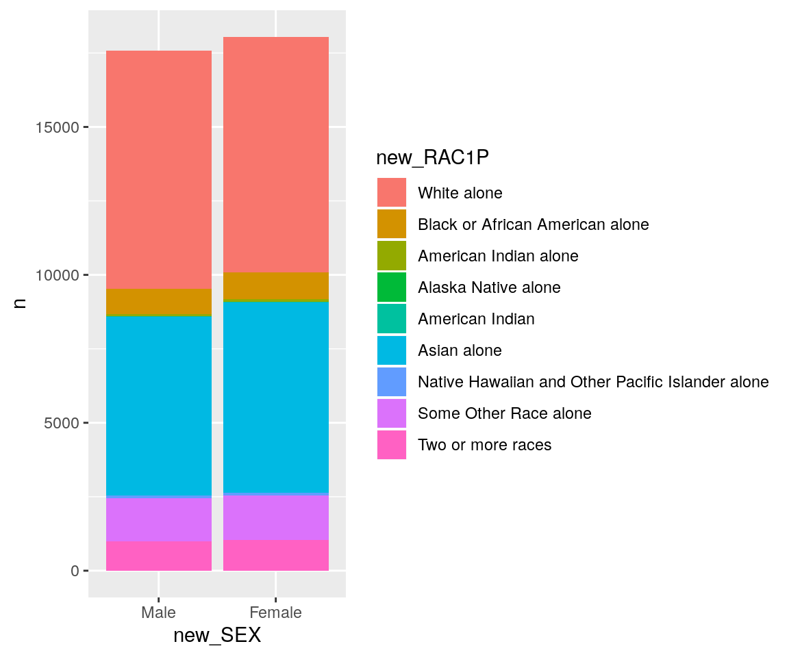
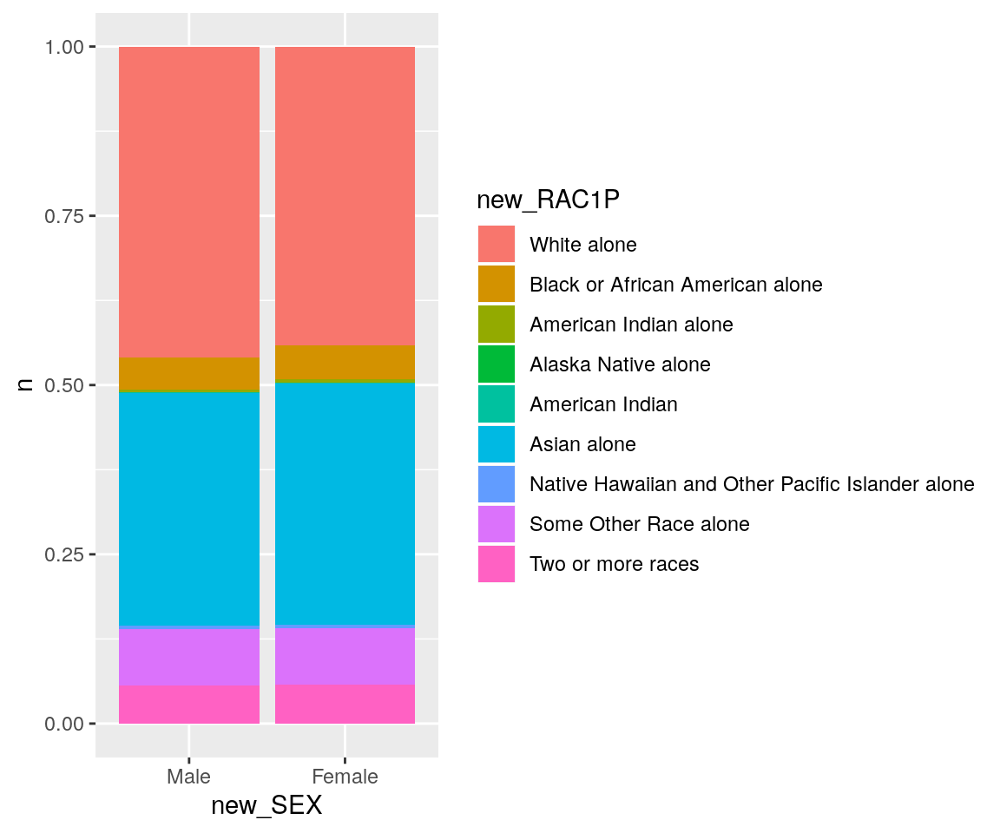
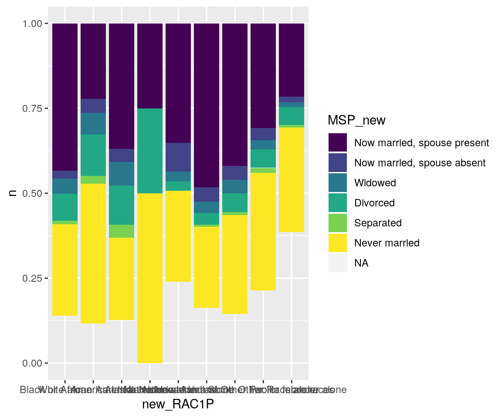
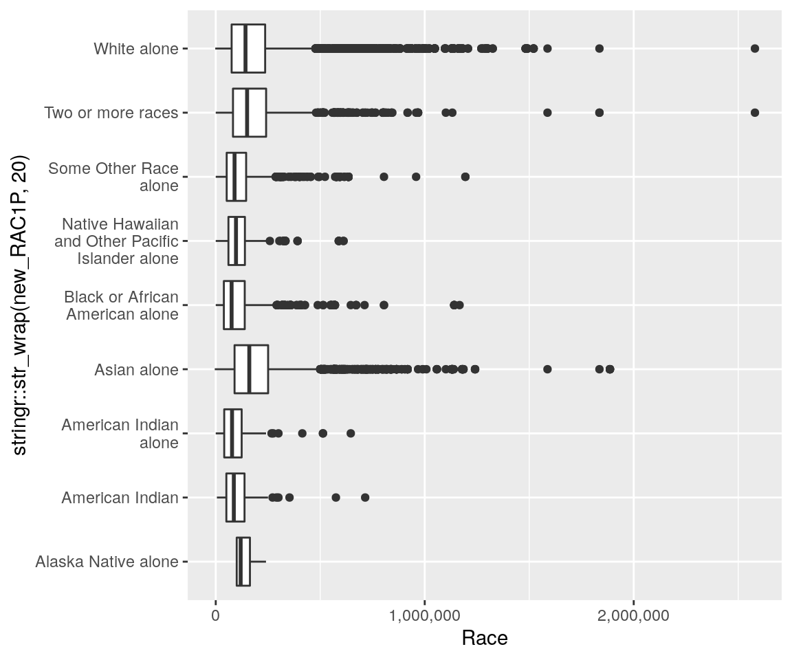
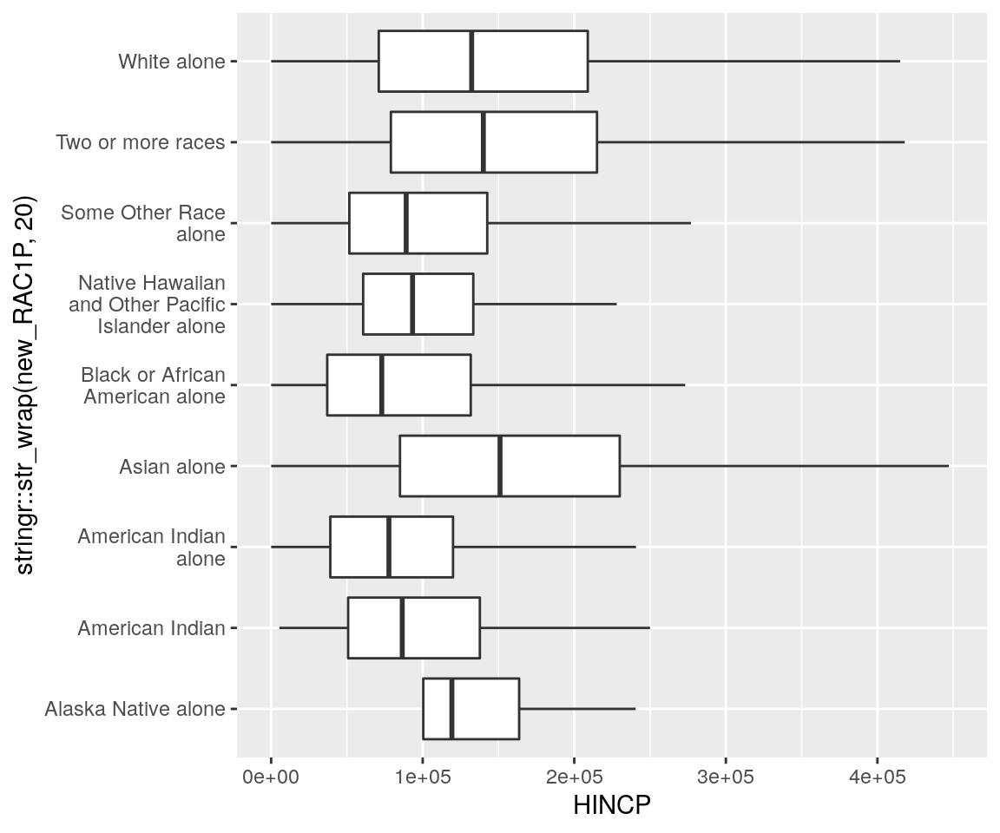
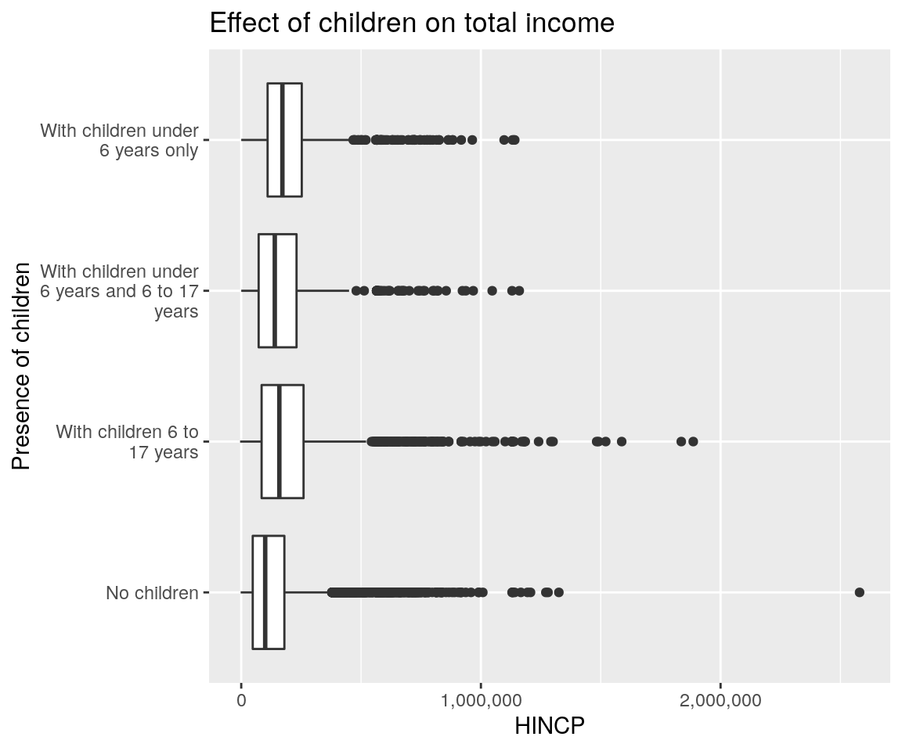
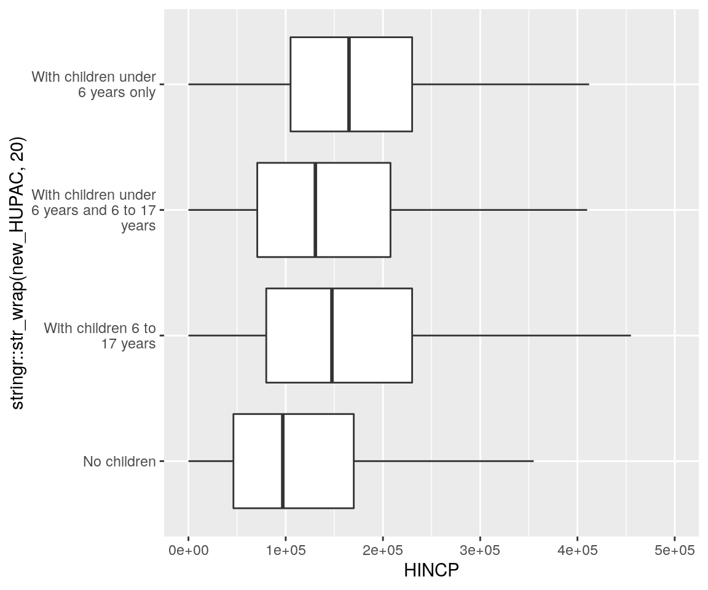
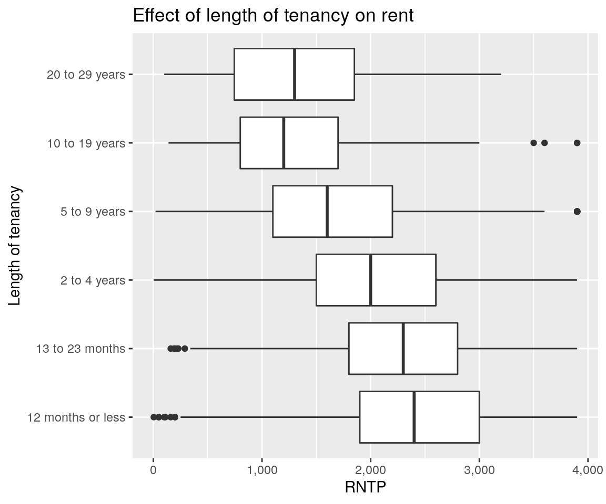
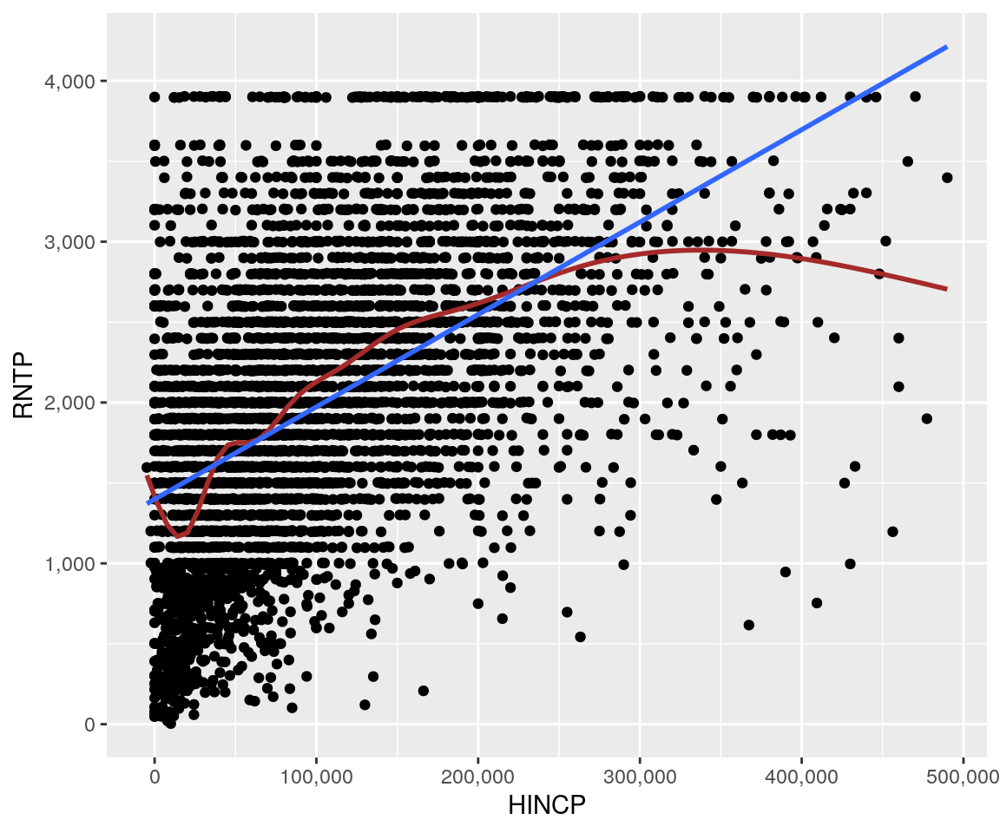
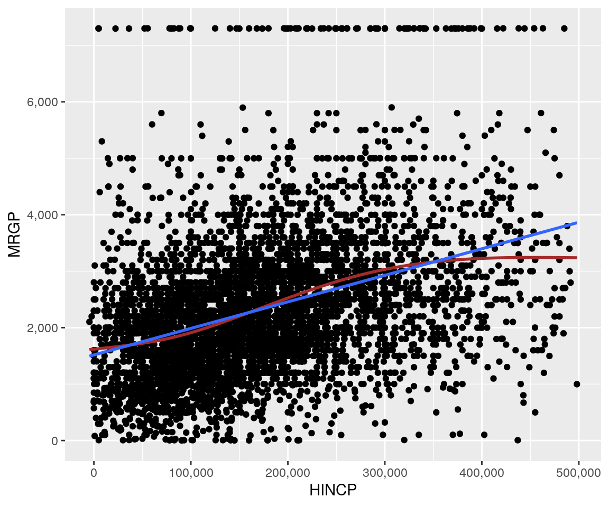

4 Relationships between variables
Now we are going to look at how the distribution of one variable changes (or fails to change) with another variable. The goal is to recognize association between variables. The analysis is different given the types of pairings of variables.
Two categorical variables. Does membership in one group coincide with membership in another group? Is there a relationship between gender and owning a truck? Those are two categorical variables. The first is sex. The second is whether the person owns a truck. It might be that certain values of the sex variable, “male”, are more likely to coincide with certain values of the owns a truck variable, “yes”.
A numeric variable and a categorical variable. In this case, usually one “groups” the sample by the categorical variable and analyzes the distribution of the numeric variable in each of the groups. For instance, we could analyze the distribution of the total household income variable “grouped” by race. In other words, analyze each of the races separately. Maybe some groups have a higher typical income than others and so on.
Two numeric variables. This is different than the other two since we don’t “break up” the sample into groups. Instead we look at the two variables for each subject at the same time. The question is whether the the two variables increase/decrease together or there is no pattern. A good example is the variables shoe size and height. If you were to look at the data you would notice that in general people with small shoe sizes are usually short and that people with large shoe sizes are usually tall. In fact, you can probably estimate how tall someone is using their shoe size.
Before we start, load the data and packages, and also set the options.
knitr::opts_chunk$set(warning=FALSE,
message=FALSE,
fig.width=6,
fig.align="center") # No warnings
library(dplyr) # For pipe and other data commands
library(janitor) # For tabyl
library(ggplot2) # For plotting using ggplot() function
library(knitr) # For making tablues using kabble()
library(stringr) # Needed for an example
library(kableExtra) # For styling
library(ggmosaic) # For mosaic plot
load("~/Data/output/ACS_clean.RData")4.1 Falsifiability
Hypotheses must be “falsifiable” e.g. able to be falsified. It needs to be possible to show that they’re are wrong. Because of this, the hypothesis usually is that the two variables are independent. If we see evidence that the variables are associated, we can reject hypothesis of independence. Assuming the variables are associated won’t work since it’s impossible to provide evidence of independence.
4.2 Two categorical variables
We can look at two categorical variables at the same time with a two-way table. The table below shows there are 7,963 females who are also white alone in our sample.
mydata_clean %>%
tabyl(new_RAC1P, new_SEX) %>%
kable() %>%
kable_styling(full_width = F, position="center")| new_RAC1P | Male | Female |
|---|---|---|
| White alone | 8068 | 7963 |
| Black or African American alone | 839 | 900 |
| American Indian alone | 70 | 87 |
| Alaska Native alone | 0 | 4 |
| American Indian | 33 | 38 |
| Asian alone | 6034 | 6422 |
| Native Hawaiian and Other Pacific Islander alone | 99 | 101 |
| Some Other Race alone | 1443 | 1503 |
| Two or more races | 1001 | 1033 |
The adorn_totals command can “add” or “total” all the columns or rows. You specify which of the two, or both, inside of the command. For instance, there are a total of 71 American Indians of which 38 are female. We also added kable_styling which prints the table in a nicer format.
mydata_clean %>%
tabyl(new_RAC1P, new_SEX) %>%
adorn_totals(c("row", "col")) %>%
kable() %>%
kable_styling(full_width = F, position="center")| new_RAC1P | Male | Female | Total |
|---|---|---|---|
| White alone | 8068 | 7963 | 16031 |
| Black or African American alone | 839 | 900 | 1739 |
| American Indian alone | 70 | 87 | 157 |
| Alaska Native alone | 0 | 4 | 4 |
| American Indian | 33 | 38 | 71 |
| Asian alone | 6034 | 6422 | 12456 |
| Native Hawaiian and Other Pacific Islander alone | 99 | 101 | 200 |
| Some Other Race alone | 1443 | 1503 | 2946 |
| Two or more races | 1001 | 1033 | 2034 |
| Total | 17587 | 18051 | 35638 |
There are two types of percentages in a two-way table–row percentages and column percentages. As an example, there are 38 American Indian females. We can divide 38 either by 71 (the row total which is the total number of American Indians) or 18,051 (the column total which is the total number of Females). This example divides each number by the total of the “row” whence it comes. The 38 American Indian Females are 53.5% of American Indians.
mydata_clean %>%
tabyl(new_RAC1P, new_SEX) %>%
adorn_totals(c("col")) %>%
adorn_percentages("row") %>%
adorn_pct_formatting(digits = 1) %>%
kable() %>%
kable_styling(full_width = F, position="center")| new_RAC1P | Male | Female | Total |
|---|---|---|---|
| White alone | 50.3% | 49.7% | 100.0% |
| Black or African American alone | 48.2% | 51.8% | 100.0% |
| American Indian alone | 44.6% | 55.4% | 100.0% |
| Alaska Native alone | 0.0% | 100.0% | 100.0% |
| American Indian | 46.5% | 53.5% | 100.0% |
| Asian alone | 48.4% | 51.6% | 100.0% |
| Native Hawaiian and Other Pacific Islander alone | 49.5% | 50.5% | 100.0% |
| Some Other Race alone | 49.0% | 51.0% | 100.0% |
| Two or more races | 49.2% | 50.8% | 100.0% |
This examples divides each number by the total of the “column” whence it comes. The 38 American Indian Females are 0.2% of Females. It also features the adorn_ns command which puts the number of the value in parentheses next to the percentage.
mydata_clean %>%
tabyl(new_RAC1P, new_SEX) %>%
adorn_totals(c("row")) %>%
adorn_percentages("col") %>%
adorn_pct_formatting(digits = 1) %>%
adorn_ns() %>%
kable() %>%
kable_styling(full_width = F, position="center")| new_RAC1P | Male | Female |
|---|---|---|
| White alone | 45.9% (8068) | 44.1% (7963) |
| Black or African American alone | 4.8% (839) | 5.0% (900) |
| American Indian alone | 0.4% (70) | 0.5% (87) |
| Alaska Native alone | 0.0% (0) | 0.0% (4) |
| American Indian | 0.2% (33) | 0.2% (38) |
| Asian alone | 34.3% (6034) | 35.6% (6422) |
| Native Hawaiian and Other Pacific Islander alone | 0.6% (99) | 0.6% (101) |
| Some Other Race alone | 8.2% (1443) | 8.3% (1503) |
| Two or more races | 5.7% (1001) | 5.7% (1033) |
| Total | 100.0% (17587) | 100.0% (18051) |
4.2.1 Row and Column Percentages
I want to draw attention to the two very similar but also very different statements we made.
- The 38 American Indian Females are 53.5% of American Indians.
- The 38 American Indian Females are 0.2% of Females.
We are dealing with two variables–sex and race. There are 38 American Indian (a race) Females (a sex) in both statements. The difference is the ordering of the variables which specifies the order in which we are dividing our population by those variables.
For example, we can divide the sample first by sex. All the males go to one side of the “room” and the females to the other. Any analysis performed thereafter would treat the two groups separately. Maybe we are curious about the proportion of “American Indians”. We know that “American Indians” account for 0.2% of “females”. We first split by gender so we say “of females” since our analysis is restricted to looking at females separately from men.
Likewise we can divide the sample first by race. Each of the races will form a group. Any analysis will again treat the races separately. Perhaps this time we are curious about the proportion of “females”. We know that “females” account for 53.5% of “American Indians”.
The variable which we first split by goes after “of”. We can first split by gender. I call each gender is a “large group”. We can then split the genders by “race”. I call each “race” (in a gender) a “small group”. The formula to follow is:
The people who are _______ (smaller group) are X% of ________ (larger group). Both statements below still refer to the 38 “American Indian” “females” but the structure specifies the order of splitting used to get to the group.
- The people who are “female” are 53.5% of “American Indians”.
- The people who are “American Indian” are 0.2% of “females”.
4.2.2 Graphing – Bar Plot
mydata_clean %>%
group_by(new_SEX, new_RAC1P) %>%
count() %>%
ggplot(aes(x = new_SEX, fill = new_RAC1P, y = n)) +
geom_bar(position="stack", stat="identity")
mydata_clean %>%
group_by(new_SEX, new_RAC1P) %>%
count() %>%
ggplot(aes(x = new_SEX, fill = new_RAC1P, y = n)) +
geom_bar(position="fill", stat="identity")
4.2.3 An Example with a Hypothesis
Let’s check if race and marriage status are associated. Our operating hypothesis is that race and marriage status are independent. This means that typically outcomes of the two combinations should be about the same.
mydata_clean %>%
tabyl(new_RAC1P, MSP_new) %>%
adorn_totals(c("row")) %>%
adorn_percentages("row") %>%
adorn_pct_formatting(digits = 1) %>%
adorn_ns() %>%
kable() %>%
kable_styling(full_width = F, position="center")| new_RAC1P | Now married, spouse present | Now married, spouse absent | Widowed | Divorced | Separated | Never married | NA_ |
|---|---|---|---|---|---|---|---|
| White alone | 43.4% (6952) | 2.3% (370) | 4.5% (729) | 7.8% (1257) | 1.0% (161) | 27.0% (4329) | 13.9% (2233) |
| Black or African American alone | 22.3% (387) | 4.1% (71) | 6.4% (111) | 12.2% (212) | 2.3% (40) | 41.2% (716) | 11.6% (202) |
| American Indian alone | 36.9% (58) | 3.8% (6) | 7.0% (11) | 11.5% (18) | 3.8% (6) | 24.2% (38) | 12.7% (20) |
| Alaska Native alone | 25.0% (1) | 0.0% (0) | 0.0% (0) | 25.0% (1) | 0.0% (0) | 50.0% (2) | 0.0% (0) |
| American Indian | 35.2% (25) | 8.5% (6) | 2.8% (2) | 2.8% (2) | 0.0% (0) | 26.8% (19) | 23.9% (17) |
| Asian alone | 48.2% (6005) | 4.3% (537) | 3.3% (410) | 3.4% (426) | 0.7% (85) | 23.8% (2969) | 16.2% (2024) |
| Native Hawaiian and Other Pacific Islander alone | 42.0% (84) | 4.0% (8) | 4.0% (8) | 5.5% (11) | 1.0% (2) | 29.0% (58) | 14.5% (29) |
| Some Other Race alone | 30.8% (907) | 3.6% (106) | 2.7% (80) | 5.4% (160) | 1.5% (45) | 34.6% (1018) | 21.4% (630) |
| Two or more races | 21.6% (439) | 1.7% (35) | 1.4% (28) | 5.2% (106) | 0.7% (15) | 30.8% (627) | 38.5% (784) |
| Total | 41.7% (14858) | 3.2% (1139) | 3.9% (1379) | 6.2% (2193) | 1.0% (354) | 27.4% (9776) | 16.7% (5939) |
mydata_clean %>%
group_by(new_RAC1P, MSP_new) %>%
count() %>%
ggplot(aes(x = new_RAC1P, fill = MSP_new, y = n)) +
geom_bar(position="fill", stat="identity")
There does seem to be a strong association, particularly for the Never married value. African Americans especially are much more likely to have never been married. We can see from the data that people who are never married make up 41% of African Americans. For contrast, people who are never married typically make up around 30% of an ethnic category. If the variables were independent, the rate of Never married for African Americans would be closer to the other groups. Next chapter we will learn how to quantify how much variance/difference there can be between groups while stil remaining independent.
4.3 Numeric and Categorical Variable
Often, we want to “break up” a sample into different groups to analyze separately. For instance, do all the races have a similar distribution of household income? The proper hypothesis would be that “race and household income are independent”. Use the group_by command to have R calculate separate numbers for each group. The order matters we are analyzing a numeric variable grouped/split by a categorical variable.
mydata_clean %>%
distinct(SERIALNO, HINCP, .keep_all = TRUE) %>%
group_by(new_RAC1P) %>%
summarize_at(vars(HINCP),
list(Min. = min,
"1st Qu." = ~quantile(., 0.25, na.rm=TRUE),
Median = median,
"3rd Qu." = ~quantile(., 0.75, na.rm=TRUE),
Max. = max,
IQR = IQR,
"n" = ~length(.)),
na.rm=TRUE) %>%
kable() %>%
kable_styling(full_width = F, position="center")| new_RAC1P | Min. | 1st Qu. | Median | 3rd Qu. | Max. | IQR | n |
|---|---|---|---|---|---|---|---|
| White alone | -2400 | 60455 | 120600 | 210000.0 | 2580000 | 149545.0 | 7170 |
| Black or African American alone | 0 | 25075 | 60000 | 112025.0 | 1141200 | 86950.0 | 896 |
| American Indian alone | 0 | 36950 | 73000 | 142750.0 | 646100 | 105800.0 | 75 |
| Alaska Native alone | 100000 | 109500 | 119000 | 128500.0 | 138000 | 19000.0 | 2 |
| American Indian | 5400 | 45400 | 80000 | 105000.0 | 353000 | 59600.0 | 25 |
| Asian alone | -4800 | 70100 | 144000 | 231000.0 | 1886000 | 160900.0 | 4416 |
| Native Hawaiian and Other Pacific Islander alone | 0 | 48000 | 85920 | 134000.0 | 610000 | 86000.0 | 65 |
| Some Other Race alone | 0 | 45000 | 80000 | 125257.5 | 1194400 | 80257.5 | 905 |
| Two or more races | 0 | 65000 | 114000 | 199000.0 | 964000 | 134000.0 | 558 |
mydata_clean %>%
ggplot(aes(x=new_RAC1P, y=HINCP)) +
geom_boxplot() +
coord_flip() +
scale_y_continuous(labels = scales::comma) +
aes(stringr::str_wrap(new_RAC1P, 20)) +
ylab("Race")
Sometimes it’s useful to have the boxplot not show the outliers so that we only compare the “typical” people. It’s a bit more work because you also have to tell the computer where the graph should end.
- Inside of
geom_boxplotputoutlier.shape = NAso the computer doesn’t graph the outlier. - Add an extra command
ylimto specify the range of values. These should be the minimum value and another value larger than all the “typical” values. Usually this is the largest 3rd quartile seen from the table of summary statistics.
mydata_clean %>%
ggplot(aes(x=new_RAC1P, y=HINCP)) +
geom_boxplot(outlier.shape = NA) +
aes(stringr::str_wrap(new_RAC1P, 20)) +
coord_flip() +
ylim(0, 450000)
You can see that whites, asians and mixed race households have a higher typical range compared to other groups. However they aren’t that different in terms of “typical” values. The real difference is the size of the spreads. Whites, asians and mixed races households have a much larger spread compared to the other groups as seen by the size of the boxes. There doesn’t appear to be enough difference between the groups to legitimate rejecting the hypothesis of independence. The variables probably are independent.
4.3.1 Another Example
Does the presence of children in a household effect the total household income? Maybe adults are motivated (or not) to make more money when children are present? We can look at how HINCP (household income) changes if we narrow our focus to households that do or no dot have children new_HUPAC. The properly formatted hypothesis is that “presence of children and household income are independent”.
mydata_clean %>%
filter(!is.na(HINCP), !is.na(new_HUPAC)) %>%
distinct(SERIALNO, HINCP, new_HUPAC) %>%
group_by(new_HUPAC) %>%
summarize_at(vars("HINCP"),
list(Min. = min,
"1st Qu." = ~quantile(., 0.25, na.rm=TRUE),
Median = median,
"3rd Qu." = ~quantile(., 0.75, na.rm=TRUE),
Max. = max,
IQR = IQR,
"n" = ~length(.)),
na.rm=TRUE) %>%
kable() %>%
kable_styling(full_width = F, position="center")| new_HUPAC | Min. | 1st Qu. | Median | 3rd Qu. | Max. | IQR | n |
|---|---|---|---|---|---|---|---|
| With children under 6 years only | 0 | 110000 | 171750 | 252575 | 1141200 | 142575 | 1006 |
| With children 6 to 17 years | -4800 | 85000 | 159000 | 260000 | 1886000 | 175000 | 2484 |
| With children under 6 years and 6 to 17 years | 0 | 72675 | 140000 | 230750 | 1160000 | 158075 | 686 |
| No children | -2400 | 48000 | 100000 | 180000 | 2580000 | 132000 | 8480 |
The medians are not too different so let’s check the boxplots.
mydata_clean %>%
distinct(SERIALNO, HINCP, new_HUPAC) %>%
filter(!is.na(HINCP), !is.na(new_HUPAC)) %>%
ggplot(aes(x=new_HUPAC, y=HINCP)) +
geom_boxplot() +
aes(stringr::str_wrap(new_HUPAC, 20)) +
coord_flip() +
scale_y_continuous(labels = scales::comma) +
xlab("Presence of children") +
ggtitle("Effect of children on total income") 
Let’s remove the outliers.
mydata_clean %>%
distinct(SERIALNO, HINCP, new_HUPAC) %>%
filter(!is.na(HINCP), !is.na(new_HUPAC)) %>%
ggplot(aes(x=new_HUPAC, y=HINCP)) +
geom_boxplot(outlier.shape = NA) +
aes(stringr::str_wrap(new_HUPAC, 20)) +
scale_y_continuous(labels = scales::comma) +
ylim(0, 500000) +
coord_flip()
There seems to be little difference between the groups. The “typical” ranges are not that different. Generally we don’t consider the distributions different unless the boxes don’t overlap at all i.e. the upper range in one group is smaller than the lower range for another group. We will learn how to use math to have the computer decide if the small difference is meaningful or not.
There doesn’t appear to be enough difference between the groups to legitimate rejecting the hypothesis of independence. The variables probably are independent.
4.3.2 Another
Let’s test the hypothesis that “length of tenancy in a dwelling and rent are indepdent”.
mydata_clean %>%
filter(!is.na(RNTP), !is.na(MV_new)) %>%
distinct(SERIALNO, RNTP, MV_new) %>%
group_by(MV_new) %>%
summarize_at(vars(RNTP),
list(Min. = min,
"1st Qu." = ~quantile(., 0.25, na.rm=TRUE),
Median = median,
"3rd Qu." = ~quantile(., 0.75, na.rm=TRUE),
Max. = max,
IQR = IQR,
"n" = ~length(.)),
na.rm=TRUE) %>%
kable() %>%
kable_styling(full_width = F, position="center")| MV_new | Min. | 1st Qu. | Median | 3rd Qu. | Max. | IQR | n |
|---|---|---|---|---|---|---|---|
| 12 months or less | 4 | 1900 | 2400 | 3000 | 3900 | 1100 | 1221 |
| 13 to 23 months | 160 | 1800 | 2300 | 2800 | 3900 | 1000 | 601 |
| 2 to 4 years | 4 | 1500 | 2000 | 2600 | 3900 | 1100 | 1236 |
| 5 to 9 years | 20 | 1100 | 1600 | 2200 | 3900 | 1100 | 1594 |
| 10 to 19 years | 140 | 800 | 1200 | 1700 | 3900 | 900 | 169 |
| 20 to 29 years | 100 | 745 | 1300 | 1850 | 3200 | 1105 | 67 |
mydata_clean %>%
filter(!is.na(RNTP), !is.na(MV_new)) %>%
distinct(SERIALNO, RNTP, MV_new) %>%
ggplot(aes(x=MV_new, y=RNTP)) +
geom_boxplot() +
coord_flip() +
scale_y_continuous(labels = scales::comma) +
xlab("Length of tenancy") +
ggtitle("Effect of length of tenancy on rent") 
There does appear to be enough evidence to reject the independence hypothesis. The higher typical value of 20 to 29 years is not in the lower typical value of 12 months or less and there is a clear trending showing an increase in typical rent. The variables appear to be associated.
4.4 Two Numeric Variables
Do people who make more money pay more for their rent/mortgage? Both are numerical variables. Perhaps total housing expenditure increases/decreases/unaffected by income. The hypothesis is “household income and rent are independent”.
mydata_clean %>%
distinct(SERIALNO, HINCP, RNTP, .keep_all = TRUE) %>%
filter(HINCP < 500000, !is.na(RNTP), !is.na(HINCP)) %>%
summarize("Average of HINCP" = mean(HINCP, na.rm=TRUE),
"Average of RNTP" = mean(RNTP, na.rm=TRUE),
"Correlation" = cor(HINCP, RNTP,
use="pairwise.complete.obs"),
"n" = length(SERIALNO)
) %>%
kable() %>%
kable_styling(full_width = F, position="center")| Average of HINCP | Average of RNTP | Correlation | n |
|---|---|---|---|
| 102924.4 | 1989.874 | 0.5438235 | 4799 |
We first assess how strong the relationship between the two variables is with “correlation”. Correlation only checks to see if the two variables increase or decrease together. A correlation close to zero means there doesn’t seem to be a simple only increasing or decreasing relation. In this case there is a fairly strong relationship between how much a household earns and how much they spend on rent. The correlation of 0.54 means about 54% of how much rent changes can be explained by how much the household earns.
Imagine comparing two households with different rents and total incomes. Suppose that you want to explain why household A pays x more dollars in rent than household B. A correlation of 0.54 means that you will be able to explain 54% of that difference by looking at the difference between their total incomes. How much we pay in rent doesn’t always come down to how much we make. Some people are willing to pay more or less because of other factors (how close it is to work, nice neighbors, better schools, etc.). The primary factor does seem to be how much we make.
mydata_clean %>%
distinct(SERIALNO, HINCP, RNTP, .keep_all = TRUE) %>%
filter(HINCP < 500000, !is.na(RNTP), !is.na(HINCP)) %>%
ggplot(aes(x=HINCP, y=RNTP)) +
geom_jitter() +
scale_x_continuous(labels = scales::comma) +
scale_y_continuous(labels = scales::comma) +
geom_smooth(se=FALSE, col="brown") +
geom_smooth(se=FALSE, method="lm")
There is a fairly strong linear relation. Rent increases as total household income also increases. There are very few high earners with low rents. There are also not that many low earners with high rent.
This a scatter plot graph of the two variables. Each dot is a subject. The x value is the household’s total income. The y value is the household’s rent amount. The red line tracks how the variables are change together but is free to go up or down. The blue line also tracks how the variables change together but will only go up or down. It looks for a “linear relationship”. Correlation only measures linear relationships. Since the red line generally is only going up the linear relationship is fairly strong.
4.4.1 Homeowners
The correlation of mortgage payment and total household income is not as strong as for rent. Only 38% of the difference in mortgage payments are explained by household income.
mydata_clean %>%
distinct(SERIALNO, HINCP, MRGP, .keep_all = TRUE) %>%
filter(HINCP < 500000, !is.na(MRGP), !is.na(HINCP)) %>%
summarize("Average of HINCP" = mean(HINCP, na.rm=TRUE),
"Average of MRGP" = mean(MRGP, na.rm=TRUE),
"Correlation" = cor(HINCP, MRGP,
use="pairwise.complete.obs"),
"n" = length(SERIALNO)
) %>%
kable() %>%
kable_styling(full_width = F, position="center")| Average of HINCP | Average of MRGP | Correlation | n |
|---|---|---|---|
| 174396.3 | 2336.378 | 0.3809859 | 4882 |
You can see in this graph that many of the dots are clustered around the blue line. However there are some “outliers”–households which have unusually high mortgages given their household income.
mydata_clean %>%
distinct(SERIALNO, HINCP, MRGP, .keep_all = TRUE) %>%
filter(HINCP < 500000, !is.na(MRGP), !is.na(HINCP)) %>%
ggplot(aes(x=HINCP, y=MRGP)) +
geom_jitter() +
scale_x_continuous(labels = scales::comma) +
scale_y_continuous(labels = scales::comma) +
geom_smooth(se=FALSE, col="brown") +
geom_smooth(se=FALSE, method="lm")
Notice that on average homeowners have higher total household incomes–170 thousand versus 102 thousand.
mydata_clean %>%
tabyl(new_RAC1P, PUMA) %>%
adorn_totals(c("row")) %>%
adorn_percentages("col") %>%
adorn_pct_formatting(digits = 1) %>%
adorn_ns() %>%
kable() %>%
kable_styling(full_width = F, position="center")| new_RAC1P | 00101 | 00102 | 00103 | 00104 | 00105 | 00106 | 00107 | 00108 | 00109 | 00110 | 08501 | 08502 | 08503 | 08504 | 08505 | 08506 | 08507 | 08508 | 08509 | 08510 | 08511 | 08512 | 08514 |
|---|---|---|---|---|---|---|---|---|---|---|---|---|---|---|---|---|---|---|---|---|---|---|---|
| White alone | 58.5% (1074) | 42.1% (756) | 62.7% (927) | 22.5% (266) | 44.8% (734) | 46.0% (667) | 31.7% (519) | 24.9% (405) | 28.2% (590) | 57.9% (1389) | 59.4% (1480) | 38.7% (582) | 48.9% (669) | 18.6% (282) | 29.9% (373) | 75.9% (893) | 49.5% (747) | 48.1% (570) | 50.0% (646) | 50.7% (755) | 61.7% (668) | 55.4% (785) | 20.6% (254) |
| Black or African American alone | 4.7% (87) | 17.1% (306) | 11.0% (162) | 26.1% (309) | 8.2% (134) | 7.5% (109) | 8.4% (138) | 2.3% (38) | 2.5% (53) | 1.8% (44) | 1.3% (32) | 1.1% (16) | 2.0% (28) | 2.2% (33) | 2.3% (29) | 2.0% (23) | 0.7% (11) | 2.5% (30) | 3.2% (41) | 2.6% (38) | 2.3% (25) | 2.1% (30) | 1.9% (23) |
| American Indian alone | 0.7% (13) | 1.2% (21) | 0.3% (5) | 1.0% (12) | 0.5% (8) | 0.4% (6) | 0.2% (3) | 0.7% (11) | 0.6% (13) | 0.4% (10) | 0.2% (4) | 0.3% (5) | 0.5% (7) | 0.3% (4) | 0.4% (5) | 0.3% (4) | 0.0% (0) | 0.2% (2) | 0.6% (8) | 0.3% (5) | 0.4% (4) | 0.1% (1) | 0.5% (6) |
| Alaska Native alone | 0.0% (0) | 0.1% (1) | 0.0% (0) | 0.0% (0) | 0.0% (0) | 0.1% (1) | 0.0% (0) | 0.0% (0) | 0.0% (1) | 0.0% (1) | 0.0% (0) | 0.0% (0) | 0.0% (0) | 0.0% (0) | 0.0% (0) | 0.0% (0) | 0.0% (0) | 0.0% (0) | 0.0% (0) | 0.0% (0) | 0.0% (0) | 0.0% (0) | 0.0% (0) |
| American Indian | 0.0% (0) | 0.3% (5) | 0.1% (2) | 1.0% (12) | 0.0% (0) | 0.1% (1) | 0.9% (14) | 0.2% (4) | 0.1% (2) | 0.2% (4) | 0.1% (2) | 0.4% (6) | 0.0% (0) | 0.2% (3) | 0.4% (5) | 0.1% (1) | 0.0% (0) | 0.0% (0) | 0.4% (5) | 0.1% (2) | 0.2% (2) | 0.1% (1) | 0.0% (0) |
| Asian alone | 24.0% (440) | 24.0% (431) | 14.1% (209) | 8.5% (100) | 30.8% (505) | 27.1% (393) | 30.2% (493) | 52.7% (858) | 56.8% (1188) | 30.9% (741) | 32.3% (805) | 48.9% (735) | 39.9% (546) | 69.5% (1052) | 45.3% (564) | 12.1% (143) | 45.4% (684) | 41.1% (487) | 20.4% (263) | 31.0% (462) | 27.0% (292) | 32.7% (463) | 48.7% (602) |
| Native Hawaiian and Other Pacific Islander alone | 0.6% (11) | 0.8% (15) | 0.3% (5) | 1.4% (16) | 1.0% (16) | 1.4% (21) | 2.4% (39) | 1.0% (17) | 1.0% (21) | 0.6% (14) | 0.1% (2) | 0.1% (2) | 0.2% (3) | 0.0% (0) | 0.2% (2) | 0.1% (1) | 0.0% (0) | 0.0% (0) | 0.4% (5) | 0.3% (4) | 0.1% (1) | 0.1% (1) | 0.3% (4) |
| Some Other Race alone | 3.9% (71) | 8.4% (150) | 3.1% (46) | 33.0% (390) | 7.5% (123) | 11.0% (160) | 18.8% (307) | 11.1% (181) | 5.6% (118) | 2.8% (66) | 2.2% (54) | 4.1% (62) | 4.0% (55) | 4.4% (67) | 17.9% (223) | 5.4% (64) | 0.4% (6) | 4.1% (48) | 18.3% (236) | 9.5% (141) | 2.9% (31) | 3.7% (53) | 23.8% (294) |
| Two or more races | 7.6% (139) | 6.1% (109) | 8.3% (122) | 6.6% (78) | 7.2% (118) | 6.3% (92) | 7.5% (122) | 6.9% (113) | 5.1% (107) | 5.4% (129) | 4.6% (114) | 6.3% (94) | 4.4% (60) | 4.8% (73) | 3.6% (45) | 4.1% (48) | 4.0% (60) | 4.1% (48) | 6.7% (87) | 5.4% (81) | 5.5% (60) | 5.9% (83) | 4.2% (52) |
| Total | 100.0% (1835) | 100.0% (1794) | 100.0% (1478) | 100.0% (1183) | 100.0% (1638) | 100.0% (1450) | 100.0% (1635) | 100.0% (1627) | 100.0% (2093) | 100.0% (2398) | 100.0% (2493) | 100.0% (1502) | 100.0% (1368) | 100.0% (1514) | 100.0% (1246) | 100.0% (1177) | 100.0% (1508) | 100.0% (1185) | 100.0% (1291) | 100.0% (1488) | 100.0% (1083) | 100.0% (1417) | 100.0% (1235) |
mydata_clean %>%
filter(!is.na(HINCP), !is.na(PUMA)) %>%
distinct(SERIALNO, HINCP, PUMA) %>%
group_by(PUMA) %>%
summarize_at(vars(HINCP),
list(Min. = min,
"1st Qu." = ~quantile(., 0.25, na.rm=TRUE),
Median = median,
"3rd Qu." = ~quantile(., 0.75, na.rm=TRUE),
Max. = max,
IQR = IQR,
"n" = ~length(.)),
na.rm=TRUE) %>%
kable() %>%
kable_styling(full_width = F, position="center")| PUMA | Min. | 1st Qu. | Median | 3rd Qu. | Max. | IQR | n |
|---|---|---|---|---|---|---|---|
| 00101 | 0 | 40000.0 | 93435 | 182125.0 | 1325300 | 142125.0 | 684 |
| 00102 | -2400 | 30000.0 | 73800 | 143600.0 | 958700 | 113600.0 | 829 |
| 00103 | 0 | 69000.0 | 140000 | 230150.0 | 1292000 | 161150.0 | 620 |
| 00104 | 0 | 24352.5 | 53800 | 93775.0 | 587200 | 69422.5 | 402 |
| 00105 | -4800 | 50250.0 | 99400 | 160750.0 | 672000 | 110500.0 | 627 |
| 00106 | 0 | 50000.0 | 93950 | 159850.0 | 1141200 | 109850.0 | 486 |
| 00107 | 0 | 46807.5 | 85000 | 145047.5 | 704200 | 98240.0 | 512 |
| 00108 | 0 | 82955.0 | 126500 | 201000.0 | 840700 | 118045.0 | 515 |
| 00109 | -2300 | 77750.0 | 146540 | 235015.0 | 1587450 | 157265.0 | 710 |
| 00110 | -4600 | 83475.0 | 150000 | 228580.0 | 1130000 | 145105.0 | 840 |
| 08501 | -2300 | 82625.0 | 177300 | 359450.0 | 2580000 | 276825.0 | 914 |
| 08502 | 0 | 78000.0 | 150000 | 254775.0 | 1008000 | 176775.0 | 578 |
| 08503 | 0 | 73300.0 | 130180 | 200000.0 | 744900 | 126700.0 | 513 |
| 08504 | 0 | 71030.0 | 135455 | 218470.0 | 831600 | 147440.0 | 466 |
| 08505 | 0 | 63900.0 | 122000 | 195700.0 | 782300 | 131800.0 | 357 |
| 08506 | 10 | 65000.0 | 117600 | 197000.0 | 990700 | 132000.0 | 389 |
| 08507 | 0 | 94000.0 | 188500 | 322400.0 | 1886000 | 228400.0 | 545 |
| 08508 | 0 | 61650.0 | 134000 | 210000.0 | 795000 | 148350.0 | 455 |
| 08509 | -2300 | 47850.0 | 95000 | 175400.0 | 736300 | 127550.0 | 479 |
| 08510 | 0 | 46200.0 | 99400 | 191600.0 | 1137000 | 145400.0 | 541 |
| 08511 | 0 | 65900.0 | 131000 | 208225.0 | 835000 | 142325.0 | 380 |
| 08512 | 0 | 83025.0 | 157000 | 247505.0 | 1132400 | 164480.0 | 478 |
| 08514 | 0 | 40000.0 | 85000 | 143000.0 | 603140 | 103000.0 | 336 |
mydata_clean %>%
filter(!is.na(HINCP), !is.na(PUMA)) %>%
distinct(SERIALNO, HINCP, PUMA, new_RAC1P) %>%
group_by(PUMA, new_RAC1P) %>%
summarize_at(vars(HINCP),
list(Min. = min,
"1st Qu." = ~quantile(., 0.25, na.rm=TRUE),
Median = median,
"3rd Qu." = ~quantile(., 0.75, na.rm=TRUE),
Max. = max,
IQR = IQR,
"n" = ~length(.)),
na.rm=TRUE) %>%
kable() %>%
kable_styling(full_width = F, position="center")| PUMA | new_RAC1P | Min. | 1st Qu. | Median | 3rd Qu. | Max. | IQR | n |
|---|---|---|---|---|---|---|---|---|
| 00101 | White alone | 0 | 51700.0 | 114000 | 215000.0 | 1325300 | 163300.0 | 501 |
| 00101 | Black or African American alone | 0 | 20285.0 | 54000 | 145300.0 | 805000 | 125015.0 | 47 |
| 00101 | American Indian alone | 0 | 25000.0 | 40600 | 115900.0 | 162000 | 90900.0 | 9 |
| 00101 | Asian alone | 0 | 31500.0 | 75600 | 174000.0 | 805000 | 142500.0 | 189 |
| 00101 | Native Hawaiian and Other Pacific Islander alone | 8300 | 20750.0 | 49100 | 98800.0 | 175300 | 78050.0 | 4 |
| 00101 | Some Other Race alone | 2400 | 26800.0 | 76000 | 155000.0 | 805000 | 128200.0 | 27 |
| 00101 | Two or more races | 0 | 50450.0 | 130100 | 241125.0 | 805000 | 190675.0 | 88 |
| 00102 | White alone | -2400 | 55200.0 | 105000 | 180000.0 | 726000 | 124800.0 | 425 |
| 00102 | Black or African American alone | 0 | 19090.0 | 47700 | 104300.0 | 565000 | 85210.0 | 171 |
| 00102 | American Indian alone | 4000 | 21425.0 | 29500 | 66400.0 | 138000 | 44975.0 | 12 |
| 00102 | Alaska Native alone | 240500 | 240500.0 | 240500 | 240500.0 | 240500 | 0.0 | 1 |
| 00102 | American Indian | 5400 | 81000.0 | 134000 | 144700.0 | 250000 | 63700.0 | 5 |
| 00102 | Asian alone | 0 | 20900.0 | 70000 | 140000.0 | 460000 | 119100.0 | 221 |
| 00102 | Native Hawaiian and Other Pacific Islander alone | 10400 | 39475.0 | 56000 | 93750.0 | 172060 | 54275.0 | 8 |
| 00102 | Some Other Race alone | 1200 | 40000.0 | 91000 | 148150.0 | 958700 | 108150.0 | 60 |
| 00102 | Two or more races | 9000 | 75000.0 | 135000 | 197000.0 | 958700 | 122000.0 | 85 |
| 00103 | White alone | 0 | 80350.0 | 162800 | 256612.5 | 1292000 | 176262.5 | 446 |
| 00103 | Black or African American alone | 0 | 42250.0 | 100000 | 171600.0 | 1166700 | 129350.0 | 95 |
| 00103 | American Indian alone | 79000 | 82000.0 | 104000 | 240700.0 | 646100 | 158700.0 | 5 |
| 00103 | American Indian | 300000 | 300000.0 | 300000 | 300000.0 | 300000 | 0.0 | 1 |
| 00103 | Asian alone | 0 | 77700.0 | 140800 | 230600.0 | 1130000 | 152900.0 | 117 |
| 00103 | Native Hawaiian and Other Pacific Islander alone | 113000 | 115250.0 | 117500 | 119750.0 | 122000 | 4500.0 | 2 |
| 00103 | Some Other Race alone | 0 | 69300.0 | 112500 | 176250.0 | 435700 | 106950.0 | 28 |
| 00103 | Two or more races | 8000 | 91850.0 | 160000 | 230300.0 | 968000 | 138450.0 | 71 |
| 00104 | White alone | 0 | 35500.0 | 77600 | 135855.0 | 296000 | 100355.0 | 110 |
| 00104 | Black or African American alone | 0 | 20550.0 | 53265 | 84925.0 | 262200 | 64375.0 | 152 |
| 00104 | American Indian alone | 65000 | 86650.0 | 113560 | 115630.0 | 154000 | 28980.0 | 6 |
| 00104 | American Indian | 50800 | 54000.0 | 80000 | 97700.0 | 105000 | 43700.0 | 5 |
| 00104 | Asian alone | 0 | 24237.5 | 52550 | 106400.0 | 328100 | 82162.5 | 46 |
| 00104 | Native Hawaiian and Other Pacific Islander alone | 30000 | 37875.0 | 56250 | 75925.0 | 87700 | 38050.0 | 4 |
| 00104 | Some Other Race alone | 0 | 31800.0 | 50000 | 86900.0 | 587200 | 55100.0 | 107 |
| 00104 | Two or more races | 4500 | 39230.0 | 53250 | 86800.0 | 233000 | 47570.0 | 44 |
| 00105 | White alone | 0 | 58500.0 | 100000 | 169000.0 | 672000 | 110500.0 | 359 |
| 00105 | Black or African American alone | 0 | 31075.0 | 80300 | 127950.0 | 488000 | 96875.0 | 60 |
| 00105 | American Indian alone | 35900 | 49975.0 | 115550 | 236550.0 | 275000 | 186575.0 | 6 |
| 00105 | Asian alone | -4800 | 53275.0 | 117500 | 185000.0 | 672000 | 131725.0 | 195 |
| 00105 | Native Hawaiian and Other Pacific Islander alone | 14400 | 58225.0 | 72000 | 134500.0 | 253200 | 76275.0 | 7 |
| 00105 | Some Other Race alone | 18000 | 50000.0 | 101900 | 154750.0 | 571000 | 104750.0 | 44 |
| 00105 | Two or more races | 2900 | 77425.0 | 131000 | 193515.0 | 635200 | 116090.0 | 68 |
| 00106 | White alone | 0 | 46650.0 | 90700 | 156500.0 | 1047800 | 109850.0 | 287 |
| 00106 | Black or African American alone | 0 | 38600.0 | 70000 | 149950.0 | 1141200 | 111350.0 | 47 |
| 00106 | American Indian alone | 55000 | 89500.0 | 124000 | 182015.0 | 240030 | 92515.0 | 3 |
| 00106 | Alaska Native alone | 100000 | 100000.0 | 100000 | 100000.0 | 100000 | 0.0 | 1 |
| 00106 | American Indian | 131500 | 131500.0 | 131500 | 131500.0 | 131500 | 0.0 | 1 |
| 00106 | Asian alone | 0 | 63875.0 | 101600 | 183000.0 | 729000 | 119125.0 | 128 |
| 00106 | Native Hawaiian and Other Pacific Islander alone | 24000 | 68100.0 | 105000 | 129000.0 | 324720 | 60900.0 | 9 |
| 00106 | Some Other Race alone | 0 | 61850.0 | 105100 | 159250.0 | 592600 | 97400.0 | 47 |
| 00106 | Two or more races | 0 | 51500.0 | 90700 | 165200.0 | 324720 | 113700.0 | 47 |
| 00107 | White alone | 0 | 37200.0 | 80300 | 138210.0 | 704200 | 101010.0 | 209 |
| 00107 | Black or African American alone | 990 | 42900.0 | 82500 | 138545.0 | 570000 | 95645.0 | 63 |
| 00107 | American Indian alone | 16800 | 24100.0 | 31400 | 68700.0 | 106000 | 44600.0 | 3 |
| 00107 | American Indian | 18000 | 28050.0 | 38400 | 68475.0 | 137700 | 40425.0 | 4 |
| 00107 | Asian alone | 0 | 65000.0 | 100000 | 170060.0 | 704200 | 105060.0 | 169 |
| 00107 | Native Hawaiian and Other Pacific Islander alone | 14700 | 67747.5 | 122855 | 141452.5 | 333200 | 73705.0 | 14 |
| 00107 | Some Other Race alone | 5000 | 51600.0 | 76700 | 118720.0 | 594300 | 67120.0 | 93 |
| 00107 | Two or more races | 21500 | 69020.0 | 103630 | 166000.0 | 704200 | 96980.0 | 53 |
| 00108 | White alone | 0 | 77100.0 | 118900 | 186600.0 | 779000 | 109500.0 | 169 |
| 00108 | Black or African American alone | 12000 | 36900.0 | 109500 | 231160.0 | 408750 | 194260.0 | 17 |
| 00108 | American Indian alone | 23900 | 71500.0 | 115400 | 164550.0 | 237700 | 93050.0 | 6 |
| 00108 | American Indian | 237700 | 264100.0 | 290500 | 321750.0 | 353000 | 57650.0 | 3 |
| 00108 | Asian alone | 0 | 90050.0 | 150000 | 230000.0 | 840700 | 139950.0 | 282 |
| 00108 | Native Hawaiian and Other Pacific Islander alone | 0 | 27350.0 | 92960 | 136425.0 | 259000 | 109075.0 | 10 |
| 00108 | Some Other Race alone | 1000 | 81320.0 | 106005 | 156050.0 | 328000 | 74730.0 | 64 |
| 00108 | Two or more races | 48600 | 88300.0 | 145200 | 190500.0 | 326710 | 102200.0 | 53 |
| 00109 | White alone | -2300 | 71200.0 | 124200 | 199000.0 | 1587450 | 127800.0 | 265 |
| 00109 | Black or African American alone | 9600 | 66700.0 | 99270 | 185500.0 | 426500 | 118800.0 | 25 |
| 00109 | American Indian alone | 53000 | 60300.0 | 86700 | 135800.0 | 207900 | 75500.0 | 8 |
| 00109 | Alaska Native alone | 138000 | 138000.0 | 138000 | 138000.0 | 138000 | 0.0 | 1 |
| 00109 | American Indian | 51000 | 217000.0 | 383000 | 549000.0 | 715000 | 332000.0 | 2 |
| 00109 | Asian alone | 0 | 97275.0 | 172600 | 263100.0 | 1587450 | 165825.0 | 424 |
| 00109 | Native Hawaiian and Other Pacific Islander alone | 32000 | 69675.0 | 136000 | 440800.0 | 610000 | 371125.0 | 8 |
| 00109 | Some Other Race alone | 12400 | 63707.5 | 110395 | 170000.0 | 454400 | 106292.5 | 46 |
| 00109 | Two or more races | 6400 | 85727.5 | 144750 | 240800.0 | 1587450 | 155072.5 | 56 |
| 00110 | White alone | 0 | 79400.0 | 148000 | 217000.0 | 785000 | 137600.0 | 585 |
| 00110 | Black or African American alone | 4800 | 50000.0 | 86000 | 228000.0 | 565000 | 178000.0 | 21 |
| 00110 | American Indian alone | 1000 | 105475.0 | 144205 | 163582.5 | 210000 | 58107.5 | 4 |
| 00110 | Alaska Native alone | 100500 | 100500.0 | 100500 | 100500.0 | 100500 | 0.0 | 1 |
| 00110 | American Indian | 63800 | 115850.0 | 167900 | 219950.0 | 272000 | 104100.0 | 2 |
| 00110 | Asian alone | -4600 | 123400.0 | 180000 | 258090.0 | 1130000 | 134690.0 | 255 |
| 00110 | Native Hawaiian and Other Pacific Islander alone | 1000 | 109400.0 | 136265 | 247075.0 | 612000 | 137675.0 | 8 |
| 00110 | Some Other Race alone | 26700 | 73752.5 | 95950 | 154775.0 | 577400 | 81022.5 | 28 |
| 00110 | Two or more races | 18400 | 102500.0 | 174500 | 274250.0 | 715000 | 171750.0 | 70 |
| 08501 | White alone | -2300 | 85212.5 | 176850 | 369950.0 | 2580000 | 284737.5 | 634 |
| 08501 | Black or African American alone | 4200 | 46000.0 | 99500 | 139275.0 | 404090 | 93275.0 | 14 |
| 08501 | American Indian alone | 87100 | 87100.0 | 87100 | 87100.0 | 87100 | 0.0 | 1 |
| 08501 | American Indian | 146700 | 146700.0 | 146700 | 146700.0 | 146700 | 0.0 | 1 |
| 08501 | Asian alone | 0 | 105000.0 | 218200 | 385710.0 | 1836000 | 280710.0 | 335 |
| 08501 | Some Other Race alone | 2000 | 30250.0 | 106000 | 216337.5 | 615400 | 186087.5 | 24 |
| 08501 | Two or more races | 13550 | 132750.0 | 241200 | 485075.0 | 2580000 | 352325.0 | 64 |
| 08502 | White alone | 1900 | 67000.0 | 137215 | 241370.0 | 1008000 | 174370.0 | 284 |
| 08502 | Black or African American alone | 11410 | 33500.0 | 52400 | 87750.0 | 330000 | 54250.0 | 10 |
| 08502 | American Indian alone | 54000 | 58100.0 | 62200 | 79450.0 | 96700 | 21350.0 | 3 |
| 08502 | American Indian | 86500 | 86500.0 | 86500 | 86500.0 | 86500 | 0.0 | 1 |
| 08502 | Asian alone | 0 | 98275.0 | 174975 | 285270.0 | 1008000 | 186995.0 | 318 |
| 08502 | Native Hawaiian and Other Pacific Islander alone | 49000 | 71575.0 | 94150 | 116725.0 | 139300 | 45150.0 | 2 |
| 08502 | Some Other Race alone | 8200 | 57425.0 | 88050 | 128850.0 | 522600 | 71425.0 | 20 |
| 08502 | Two or more races | 27700 | 108450.0 | 183700 | 319532.5 | 841000 | 211082.5 | 52 |
| 08503 | White alone | 0 | 64000.0 | 120000 | 198000.0 | 744900 | 134000.0 | 285 |
| 08503 | Black or African American alone | 24000 | 64400.0 | 145000 | 188700.0 | 231500 | 124300.0 | 11 |
| 08503 | American Indian alone | 38500 | 88975.0 | 112900 | 140000.0 | 200000 | 51025.0 | 4 |
| 08503 | Asian alone | 200 | 100000.0 | 151120 | 229015.0 | 744900 | 129015.0 | 231 |
| 08503 | Native Hawaiian and Other Pacific Islander alone | 82000 | 82000.0 | 82000 | 82000.0 | 82000 | 0.0 | 1 |
| 08503 | Some Other Race alone | 35000 | 72250.0 | 112000 | 157625.0 | 440000 | 85375.0 | 19 |
| 08503 | Two or more races | 14200 | 81025.0 | 135300 | 216955.0 | 329280 | 135930.0 | 32 |
| 08504 | White alone | 0 | 74100.0 | 136000 | 225500.0 | 831600 | 151400.0 | 121 |
| 08504 | Black or African American alone | 10000 | 47000.0 | 73000 | 108000.0 | 205000 | 61000.0 | 9 |
| 08504 | American Indian alone | 99300 | 155650.0 | 212000 | 313100.0 | 414200 | 157450.0 | 3 |
| 08504 | American Indian | 22000 | 41325.0 | 60650 | 79975.0 | 99300 | 38650.0 | 2 |
| 08504 | Asian alone | 0 | 80000.0 | 143000 | 230300.0 | 595000 | 150300.0 | 345 |
| 08504 | Some Other Race alone | 0 | 68075.0 | 124000 | 194250.0 | 292800 | 126175.0 | 18 |
| 08504 | Two or more races | 17300 | 92187.5 | 167500 | 305700.0 | 609000 | 213512.5 | 30 |
| 08505 | White alone | 0 | 43400.0 | 102900 | 161005.0 | 782300 | 117605.0 | 143 |
| 08505 | Black or African American alone | 3000 | 62750.0 | 101650 | 181575.0 | 319000 | 118825.0 | 16 |
| 08505 | American Indian alone | 6300 | 65000.0 | 85700 | 156900.0 | 159160 | 91900.0 | 5 |
| 08505 | American Indian | 41200 | 68825.0 | 96450 | 124075.0 | 151700 | 55250.0 | 2 |
| 08505 | Asian alone | 9700 | 91000.0 | 150000 | 221725.0 | 565000 | 130725.0 | 163 |
| 08505 | Native Hawaiian and Other Pacific Islander alone | 60000 | 122200.0 | 184400 | 246600.0 | 308800 | 124400.0 | 2 |
| 08505 | Some Other Race alone | 0 | 63000.0 | 103500 | 143507.5 | 382000 | 80507.5 | 56 |
| 08505 | Two or more races | 30500 | 91200.0 | 137600 | 213410.0 | 382000 | 122210.0 | 17 |
| 08506 | White alone | 10 | 65225.0 | 125750 | 200000.0 | 990700 | 134775.0 | 326 |
| 08506 | Black or African American alone | 13600 | 81000.0 | 111600 | 288000.0 | 712000 | 207000.0 | 12 |
| 08506 | American Indian alone | 22000 | 61550.0 | 101100 | 103300.0 | 105500 | 41750.0 | 3 |
| 08506 | American Indian | 84000 | 84000.0 | 84000 | 84000.0 | 84000 | 0.0 | 1 |
| 08506 | Asian alone | 7800 | 78825.0 | 136000 | 198500.0 | 990700 | 119675.0 | 56 |
| 08506 | Native Hawaiian and Other Pacific Islander alone | 150000 | 150000.0 | 150000 | 150000.0 | 150000 | 0.0 | 1 |
| 08506 | Some Other Race alone | 23000 | 63000.0 | 96400 | 185000.0 | 415800 | 122000.0 | 21 |
| 08506 | Two or more races | 10900 | 99510.0 | 142750 | 185832.5 | 415800 | 86322.5 | 28 |
| 08507 | White alone | 0 | 82400.0 | 174050 | 326000.0 | 1483000 | 243600.0 | 318 |
| 08507 | Black or African American alone | 83000 | 97500.0 | 112000 | 120000.0 | 128000 | 22500.0 | 3 |
| 08507 | Asian alone | 0 | 120850.0 | 204500 | 324300.0 | 1886000 | 203450.0 | 240 |
| 08507 | Some Other Race alone | 219800 | 463450.0 | 707100 | 950750.0 | 1194400 | 487300.0 | 2 |
| 08507 | Two or more races | 30000 | 130700.0 | 243155 | 549527.5 | 1101000 | 418827.5 | 30 |
| 08508 | White alone | 0 | 52375.0 | 95750 | 194650.0 | 765000 | 142275.0 | 266 |
| 08508 | Black or African American alone | 5500 | 41925.0 | 71005 | 114750.0 | 300000 | 72825.0 | 12 |
| 08508 | American Indian alone | 118000 | 163500.0 | 209000 | 254500.0 | 300000 | 91000.0 | 2 |
| 08508 | Asian alone | 3100 | 104500.0 | 183500 | 262500.0 | 795000 | 158000.0 | 175 |
| 08508 | Some Other Race alone | 13200 | 61750.0 | 100000 | 162000.0 | 233500 | 100250.0 | 19 |
| 08508 | Two or more races | 36000 | 70950.0 | 150000 | 204000.0 | 311600 | 133050.0 | 31 |
| 08509 | White alone | 0 | 54600.0 | 100210 | 191000.0 | 736300 | 136400.0 | 297 |
| 08509 | Black or African American alone | 19400 | 66000.0 | 100400 | 167000.0 | 345000 | 101000.0 | 21 |
| 08509 | American Indian alone | 0 | 16850.0 | 33700 | 40700.0 | 47700 | 23850.0 | 3 |
| 08509 | American Indian | 36000 | 47000.0 | 58000 | 69000.0 | 80000 | 22000.0 | 2 |
| 08509 | Asian alone | -2300 | 49500.0 | 99320 | 195250.0 | 736300 | 145750.0 | 120 |
| 08509 | Native Hawaiian and Other Pacific Islander alone | 12000 | 21000.0 | 30000 | 39000.0 | 48000 | 18000.0 | 2 |
| 08509 | Some Other Race alone | 0 | 50000.0 | 98500 | 150400.0 | 495000 | 100400.0 | 69 |
| 08509 | Two or more races | 0 | 69250.0 | 114700 | 244000.0 | 628300 | 174750.0 | 52 |
| 08510 | White alone | 0 | 61500.0 | 115500 | 220000.0 | 1137000 | 158500.0 | 323 |
| 08510 | Black or African American alone | 8440 | 40650.0 | 80000 | 131500.0 | 671750 | 90850.0 | 23 |
| 08510 | American Indian alone | 11400 | 92850.0 | 140600 | 249150.0 | 513000 | 156300.0 | 4 |
| 08510 | American Indian | 245000 | 327500.0 | 410000 | 492500.0 | 575000 | 165000.0 | 2 |
| 08510 | Asian alone | 300 | 38300.0 | 99000 | 185000.0 | 918000 | 146700.0 | 169 |
| 08510 | Native Hawaiian and Other Pacific Islander alone | 60700 | 64275.0 | 67850 | 71425.0 | 75000 | 7150.0 | 2 |
| 08510 | Some Other Race alone | 0 | 40000.0 | 65000 | 105800.0 | 255000 | 65800.0 | 49 |
| 08510 | Two or more races | 11200 | 71650.0 | 121000 | 210100.0 | 918000 | 138450.0 | 47 |
| 08511 | White alone | 0 | 63725.0 | 131380 | 209915.0 | 750000 | 146190.0 | 270 |
| 08511 | Black or African American alone | 25000 | 50850.0 | 66200 | 136250.0 | 357750 | 85400.0 | 11 |
| 08511 | American Indian alone | 47000 | 47750.0 | 55000 | 67775.0 | 85100 | 20025.0 | 4 |
| 08511 | American Indian | 36000 | 36000.0 | 36000 | 36000.0 | 36000 | 0.0 | 1 |
| 08511 | Asian alone | 9010 | 94215.0 | 155000 | 238000.0 | 835000 | 143785.0 | 111 |
| 08511 | Native Hawaiian and Other Pacific Islander alone | 184500 | 184500.0 | 184500 | 184500.0 | 184500 | 0.0 | 1 |
| 08511 | Some Other Race alone | 19800 | 82600.0 | 108150 | 157500.0 | 315000 | 74900.0 | 14 |
| 08511 | Two or more races | 42300 | 85050.0 | 141000 | 315500.0 | 745100 | 230450.0 | 39 |
| 08512 | White alone | 0 | 78800.0 | 145750 | 245417.5 | 1132400 | 166617.5 | 318 |
| 08512 | Black or African American alone | 900 | 65650.0 | 124000 | 173500.0 | 280000 | 107850.0 | 12 |
| 08512 | American Indian alone | 204800 | 204800.0 | 204800 | 204800.0 | 204800 | 0.0 | 1 |
| 08512 | American Indian | 135000 | 135000.0 | 135000 | 135000.0 | 135000 | 0.0 | 1 |
| 08512 | Asian alone | 0 | 128765.0 | 190185 | 295050.0 | 722900 | 166285.0 | 164 |
| 08512 | Native Hawaiian and Other Pacific Islander alone | 248000 | 248000.0 | 248000 | 248000.0 | 248000 | 0.0 | 1 |
| 08512 | Some Other Race alone | 28050 | 68850.0 | 109350 | 164500.0 | 235000 | 95650.0 | 19 |
| 08512 | Two or more races | 9200 | 116400.0 | 188750 | 288900.0 | 647000 | 172500.0 | 42 |
| 08514 | White alone | 0 | 42200.0 | 79000 | 140700.0 | 603140 | 98500.0 | 82 |
| 08514 | Black or African American alone | 1400 | 19700.0 | 40000 | 104500.0 | 320500 | 84800.0 | 11 |
| 08514 | American Indian alone | 55000 | 58750.0 | 62500 | 74700.0 | 103800 | 15950.0 | 4 |
| 08514 | Asian alone | 0 | 41700.0 | 107000 | 167450.0 | 426000 | 125750.0 | 182 |
| 08514 | Native Hawaiian and Other Pacific Islander alone | 72000 | 84000.0 | 96000 | 108000.0 | 120000 | 24000.0 | 2 |
| 08514 | Some Other Race alone | 1400 | 42040.0 | 65000 | 124100.0 | 320500 | 82060.0 | 81 |
| 08514 | Two or more races | 10000 | 64800.0 | 121350 | 201125.0 | 365300 | 136325.0 | 22 |